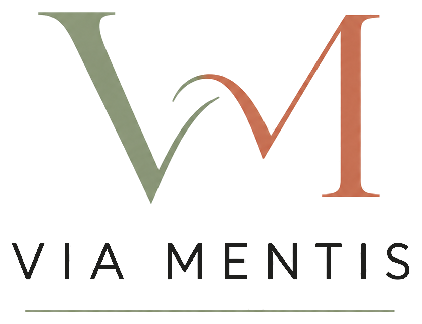

Ann Katrin Beck
Als diplomierte Pflegefachfrau HF mit Schwerpunkt Psychiatrie begleite ich seit über 15 Jahren Menschen in herausfordernden Lebenssituationen.
Während meiner langjährigen Tätigkeit in der psychiatrischen Pflege begleitete ich Menschen in unterschiedlichen Lebensphasen. Besonders geprägt haben mich die Arbeit in der Gemeindepsychiatrie und im Case Management sowie meine Erfahrungen in der Akutpsychiatrie, Psychosomatik, Alterspsychiatrie und Forensik. Diese vielfältigen Erfahrungen ermöglichen es mir, Menschen mit unterschiedlichen Bedürfnissen individuell und ressourcenorientiert zu begleiten.
Neben der Arbeit mit Erwachsenen liegt mir auch die Begleitung von Jugendlichen und jungen Erwachsenen am Herzen. Durch meine langjährige Tätigkeit in der Bildung durfte ich viele junge Menschen in ihrer persönlichen und beruflichen Entwicklung unterstützen und begleiten. Ich weiss, wie herausfordernd Übergänge, Belastungen und Krisen sein können und wie wichtig dabei Orientierung, Vertrauen und eine verlässliche Begleitung sind.
Die Arbeit mit Menschen steht für mich seit jeher im Mittelpunkt. Ich begegne jedem Menschen mit Wertschätzung, Empathie und Respekt. Nicht die Diagnose, sondern der Mensch mit seiner persönlichen Geschichte, seinen Stärken und seinen individuellen Bedürfnissen steht für mich im Vordergrund.
Meine Haltung
Mit Via Mentis habe ich mich bewusst für eine persönliche und alltagsnahe Form der Begleitung entschieden.
Vielleicht befinden Sie sich gerade in einer belastenden Lebensphase oder wünschen sich mehr Orientierung und Unterstützung im Alltag. Mir ist wichtig, dass Sie sich mit Ihren Anliegen ernst genommen fühlen und in Ihrem eigenen Tempo begleitet werden.
Ich verstehe psychosoziale Begleitung als wertvolle Ergänzung zur medizinischen und psychotherapeutischen Behandlung. Im Mittelpunkt stehen Sie mit Ihrer persönlichen Geschichte, Ihren Bedürfnissen und Ihren Ressourcen.
Ich bin überzeugt, dass eine vertrauensvolle Beziehung, Kontinuität und eine Begleitung auf Augenhöhe dazu beitragen können, Stabilität zu fördern, Krisen vorzubeugen und neue Perspektiven zu eröffnen.